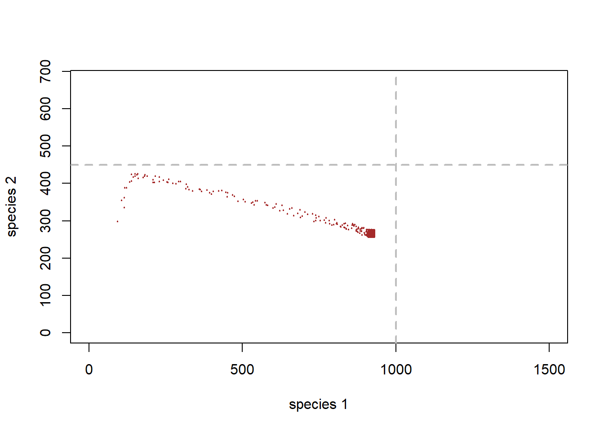

Species interactions: competition!
NRES 470/670
Spring 2020
Species interactions
PVA, as you may recall, tends to be very single-species focused.
BUT population ecology doesn’t have to be single-species focused. There are many cases where we would do well to think about species interactions specifically.
From a modeling standpoint, this is where things really get interesting – with species interactions, we start to see some really unpredictable emergent properties!
Species interactions can be classified according to the effect of the interaction on each species: (+,+), (+,-), (+,0), (-,-), (-,0), (0,0)
Q: Can you name each of the above interaction classes? [tophat]
Competition
What is competition?
Competition is defined a type of inter-species interaction by which the population vital rates of each species is negatively influenced by the presence of the other.
There is not much essential difference between within-species competition (one of the primary mechanisms for density-dependent population regulation) and among-species competition for resources!
Exploitation
This is the kind of competition we probably think about first- all individuals are competing for resources and all have similar competitive abilities. It’s a free-for-all: everyone gets some piece of a limited pie!
Competition for resources within species is often the mechanism behind the density-dependent processes that we have already discussed this class. Within a single species, this is often called “scramble competition”.
Interference
Sometimes the negative effect of one actor (individual of the same or another species) on another actor is due to direct behavioral exclusion. This is the case with birds that maintain territories and keep other birds off the territory.
Some plants engage in interference competition in a process called “allelopathy”.

Modeling competition: extending the logistic growth equations to more than one species!
If intra-species competition and inter-species competition are essentially the same, maybe we can model these processes the same!!
- Recall the logistic growth equation!
\(\Delta N = r\cdot N_t \cdot (1-\frac{N}{K})\)
- Now consider the case where we have two species whose dynamics can be described by logistic growth equations:
Species 1: \(\Delta N1 = r\cdot N1_t \cdot (1-\frac{N1}{K1})\)
Species 2: \(\Delta N2 = r\cdot N2_t \cdot (1-\frac{N2}{K2})\)
- Now imagine that population growth for each species is further depressed by the presence of the other! We can envision a scenario where (e.g.,) the presence of one species helps to fill up the carrying capacity for the other species, and vice versa!
Species 1: \(\Delta N1 = r\cdot N1_t \cdot (1-\frac{N1+\alpha N2}{K1})\)
Species 2: \(\Delta N2 = r\cdot N2_t \cdot (1-\frac{N2+\beta N1}{K2})\)
The constants \(\alpha\) and \(\beta\) are measures of the effect of one species on the growth of the other species.
Q: what does it mean if \(\alpha\) is equal to 1?
Q: what does it mean if \(\alpha\) is equal to 5?
Q: what does it mean if \(\alpha\) is equal to \(\frac{1}{5}\)?
Q: what does it mean if \(\alpha\) is equal to zero?
Let’s explore this model together in InsightMaker!
Step 1: clone a basic (non-interacting) two-species model here. Try some different parameter settings, to make sure the model is doing what you expect!
Step 2: Now add the “alpha” and “beta” terms to represent the degree to which species 1 competes with species 2, and vice versa. What should “alpha” and “beta” link to??
Step 3: Change the parameter values around and see how the model behaves.
This model is known as Lotka-Volterra competition! The model is named after mathematicians Alfred Lotka and Vito Volterra
Q: what happens if one species is a superior competitor? What does it mean to be a superior competitor? Can one species go extinct?
Q: what conditions are necessary for coexistence in this model? [tophat]
Q: imagine that species 1 is an exotic species- a possible invader of an ecosystem dominated by species 2 (which is at carrying capacity). Under what conditions is species 1 successful in invading? Under what conditions does the invader cause the extinction of the native species?
Q: can you identify any equilibrium conditions (either stable or unstable)?
Phase plane!
In the study of dynamic systems (such as the Lotka-Volterra competition model) it can be very useful to visualize the system on the phase plane.
To do this, we envision the abundance of each interacting species as a coordinate in a cartesian plane, with one species as the y axis and the other species as the x axis. This 2-D surface is called the phase plane.
Then, for each time step in the model, we plot out where we are in the phase plane (plot the abundances of species 1 and species 2 as a point on the 2-D cartesian surface).
For example:
Let’s build the basic Lotka-Volterra competition model in R.
If you want to follow along, you can download the script here
##### LOTKA VOLTERRA COMPETITION EXAMPLE
## Params
Alpha <- 1.1
Beta <- 0.5
InitN1 <- 100
InitN2 <- 300
K1 <- 1000
K2 <- 450
Rmax1 <- 0.05
Rmax2 <- 0.3
Nyears <- 1000
System <- data.frame(n1 = rep(InitN1,(Nyears+1)),n2 = InitN2)
doYear <- function(prevyear){
n1 <- prevyear[1] + prevyear[1] * Rmax1 * (1-((prevyear[1]+Alpha*prevyear[2])/(K1)))
n2 <- prevyear[2] + prevyear[2] * Rmax2 * (1-((prevyear[2]+Beta*prevyear[1])/(K2)))
return(c(n1,n2))
}
## Do simulation
for(i in 1:(Nyears+1)){
System[1+i,] <- doYear(System[i,])
}Now let’s visualize year zero in phase space:
####
# visualize the initial abundances on the phase plane
plot(1,1,pch="",ylim=c(0,K2*1.5),xlim=c(0,K1*1.5),xlab="species 1",ylab="species 2")
points(System[1,],col="green",pch=20,cex=2)
How about the first 5 years…
# and the first 5 years...
plot(1,1,pch="",ylim=c(0,K2*1.5),xlim=c(0,K1*1.5),xlab="species 1",ylab="species 2")
points(System[1:6,],col="green",pch=20,cex=2)
Note that every point on the phase plane has both a location and a direction - think of the phase plane like a magnetic field- at each point in the phase plane, the system is attracted or repelled from going certain directions.
And the entire simulation?
# and many years!
plot(1,1,pch="",ylim=c(0,K2*1.5),xlim=c(0,K1*1.5),xlab="species 1",ylab="species 2")
points(System,col="green",pch=20,cex=2)
Okay, so species 1 is outcompeting species 2. As abundance of species 1 goes up, the abundance of species 2 declines, and we end up with just species 1!
Here is another example…
##### LOTKA VOLTERRA COMPETITION EXAMPLE #2
## Params
Alpha <- 0.3
Beta <- 0.2
InitN1 <- 100
InitN2 <- 300
K1 <- 1000
K2 <- 450
Rmax1 <- 0.05
Rmax2 <- 0.3
Nyears <- 1000
System <- data.frame(n1 = rep(InitN1,(Nyears+1)),n2 = InitN2)
doYear <- function(prevyear){
n1 <- prevyear[1] + prevyear[1] * Rmax1 * (1-((prevyear[1]+Alpha*prevyear[2])/(K1)))
n2 <- prevyear[2] + prevyear[2] * Rmax2 * (1-((prevyear[2]+Beta*prevyear[1])/(K2)))
return(c(n1,n2))
}
## Do simulation
for(i in 1:(Nyears+1)){
System[1+i,] <- doYear(System[i,])
}With these new parameters, phase space looks like this (with jittering to indicate concentration of points:
# visualize on the phase plane
plot(1,1,pch="",ylim=c(0,K2*1.5),xlim=c(0,K1*1.5),xlab="species 1",ylab="species 2")
points(jitter(System[,1],500),jitter(System[,2],500),col="brown",pch=20,cex=0.3)
abline(h=K2,v=K1,col="gray",lwd=2,lty=2)
You can see that this sytem has arrived at an equilibrium at the end, just below the carrying capacity for species 1.
Finally, let’s consider multiple starting points and see how the system behaves!
##### LOTKA VOLTERRA COMPETITION EXAMPLE #3: multiple starting points
## Params
InitN1 <- 1200
InitN2 <- 25
System1 <- data.frame(n1 = rep(InitN1,(Nyears+1)),n2 = InitN2)
## Do simulation
for(i in 1:(Nyears+1)){
System1[1+i,] <- doYear(System1[i,])
}
InitN1 <- 500
InitN2 <- 100
System2 <- data.frame(n1 = rep(InitN1,(Nyears+1)),n2 = InitN2)
## Do simulation
for(i in 1:(Nyears+1)){
System2[1+i,] <- doYear(System2[i,])
}
InitN1 <- 800
InitN2 <- 600
System3 <- data.frame(n1 = rep(InitN1,(Nyears+1)),n2 = InitN2)
## Do simulation
for(i in 1:(Nyears+1)){
System3[1+i,] <- doYear(System3[i,])
}Now, phase space looks like this (with jittering to indicate concentration of points:
# visualize on the phase plane
plot(1,1,pch="",ylim=c(0,K2*1.5),xlim=c(0,K1*1.5),xlab="species 1",ylab="species 2")
points(jitter(System[,1],500),jitter(System[,2],500),col="brown",pch=20,cex=0.3)
points(jitter(System1[,1],500),jitter(System1[,2],500),col="green",pch=20,cex=0.3)
points(jitter(System2[,1],500),jitter(System2[,2],500),col="red",pch=20,cex=0.3)
points(jitter(System3[,1],500),jitter(System3[,2],500),col="blue",pch=20,cex=0.3)
abline(h=K2,v=K1,col="gray",lwd=2,lty=2)Q: Does this two-species system have a stable equilibrium?
## Warning: package 'deSolve' was built under R version 3.6.3Working in the phase plane!
There is a lot you can learn about an interacting two-species system by working with the phase plane.
First of all, it is useful to imagine that each point in phase space is associated with an arrow, indicating where the system is expected to go from that point in phase space (every point has a direction associated with it).
So, imagine we start at the initial abundance in the above figures. Where does the arrow point in phase space?
The length of the arrow represents the speed at which the system will move in the direction of the arrow (the degree of repulsion from that point in phase space).
Now imagine we draw arrows throughout phase space, representing where the system would be expected to go.
Note: this example uses R code from Paul Hurtado
##########
# Visualize phase plane with arrows!
##########
#######################################################################################
## SPECIFY MODEL AND INITIALIZE
#
## toggle switch function for phase arrow and nullcline plotting
toggle = compiler::cmpfun(function(u,v,parms) {
c( u*parms[1]*(1-(u+(parms[2]*v))/parms[3]), v*parms[4]*(1-(v+(parms[5]*u))/parms[6]) )
})
fun=toggle ## Our generic name for the system of equations to look at! ;-)
#
## toggle switch function for computing solution trajectories with deSolve::ode()
#Toggle = as.ode.func(toggle)
#
## parameter values?
Rmax1 <- 0.05
Alpha <- 0.3
K1 <- 1000
Rmax2 <- 0.3
Beta <- 0.2
K2 <- 450
parms=c(Rmax1,Alpha,K1,Rmax2,Beta,K2)
# toggle(100,100,parms)
xlim = c(5,2000)
ylim = c(5,1000)
new <- phasearrows.calc(toggle,xlim,ylim,resol=25,parms=parms)
plot(1,1,pch="",xlim=xlim,ylim=ylim,xlab="N1",ylab="N2")
phasearrows.draw(new)
#
## END MODEL SPECIFICATION AND INITIALIZATION
#######################################################################################Take any arbitrary starting point. Now we can trace the trajectory that the system will take in phase space.
Try it!!
You will see that there are some key thresholds in phase space that we should consider. For example, arrows can reverse direction!
Isoclines!
Isoclines help to delineate those key features in phase space - kind of like ridgetops on mountains. The place beyond which up arrows turn to down arrows!
Here is one example:
Species 1 isocline…
#### example with phase-plane arrows
plot(1,1,pch="",xlim=xlim,ylim=ylim,xlab="N1",ylab="N2")
phasearrows.draw(new)
abline(K1/Alpha,-(K1/Alpha)/K1,col="red",lwd=3) # species 1
abline(K2,-K2/(K2/Beta),col="blue",lwd=3) # species 1The red line represents the conditions under which the growth rate of species 1 is zero.
Q: under what conditions is carrying capacity “used up” for species 1??
Below the red line, species 1 will tend to increase.
Above the red line, species 1 will tend to decrease.
The blue line (isocline) represents the conditions under which carrying capacity is used up for species 2!
Q: under what conditions is carrying capacity “used up” for species 2??
Below the blue line, species 2 will tend to increase.
Above the blue line, species 2 will tend to decrease.
Q: consider the point where the two isoclines cross. What does this point represent? [tophat]
Let’s consider the following case…
##########
# Another example
##########
Rmax1 <- 0.2
Alpha <- 1.1
K1 <- 1000
Rmax2 <- 0.2
Beta <- 0.9
K2 <- 500
parms=c(Rmax1,Alpha,K1,Rmax2,Beta,K2)
# toggle(100,100,parms)
xlim = c(5,1500)
ylim = c(5,1000)
new <- phasearrows.calc(toggle,xlim,ylim,resol=25,parms=parms)
plot(1,1,pch="",xlim=xlim,ylim=ylim,xlab="N1",ylab="N2")
phasearrows.draw(new)
abline(K1/Alpha,-(K1/Alpha)/K1,col="red",lwd=3) # species 1
abline(K2,-K2/(K2/Beta),col="blue",lwd=3) # species 2Follow the trajectories from any point in this phase space. What is the outcome here?
Q: Is there a system-wide equilibrium? [tophat]
Q: Is there any point in this phase space where the population growth goes negative for species 1 (K1 used up) and positive for species 2 (some of K2 left unused)?
Q: What happens to species 1 when carrying capacity is used up for species 2? Is there room for species 1 to invade?
Q: What happens to species 2 when carrying capacity is used up for species 1? Is there room for species 2 to invade?
How about this example?
#########
# And another example!
#########
Rmax1 <- 0.5
Alpha <- 1.05
K1 <- 890
Rmax2 <- 0.2
Beta <- 0.5
K2 <- 890
parms=c(Rmax1,Alpha,K1,Rmax2,Beta,K2)
# toggle(100,100,parms)
xlim = c(5,1500)
ylim = c(5,1000)
new <- phasearrows.calc(toggle,xlim,ylim,resol=25,parms=parms)
plot(1,1,pch="",xlim=xlim,ylim=ylim,xlab="N1",ylab="N2")
phasearrows.draw(new)
abline(K1/Alpha,-(K1/Alpha)/K1,col="red",lwd=3) # species 1
abline(K2,-K2/(K2/Beta),col="blue",lwd=3) # species 2Follow the trajectories from any point in this phase space. What is the outcome here?
Q: Is there a system-wide equilibrium?
What about this case(going back to the earlier example…):
########
# And another!
#########
Alpha <- 0.3
Beta <- 0.2
K1 <- 1000
K2 <- 450
Rmax1 <- 0.05
Rmax2 <- 0.3
Nyears <- 1000
ylim=c(0,K2*1.5)
xlim=c(0,K1*1.5)
plot(1,1,pch="",ylim=ylim,xlim=xlim,xlab="species 1",ylab="species 2")
points(jitter(System[,1],500),jitter(System[,2],500),col="brown",pch=20,cex=0.4)
points(jitter(System1[,1],500),jitter(System1[,2],500),col="green",pch=20,cex=0.4)
points(jitter(System2[,1],500),jitter(System2[,2],500),col="red",pch=20,cex=0.4)
points(jitter(System3[,1],500),jitter(System3[,2],500),col="blue",pch=20,cex=0.4)
parms=c(Rmax1,Alpha,K1,Rmax2,Beta,K2)
xlim = c(5,1500)
ylim = c(5,1000)
new <- phasearrows.calc(toggle,xlim,ylim,resol=15,parms=parms)
phasearrows.draw(new)
abline(h=K2,v=K1,col="gray",lwd=2,lty=2)
abline(K1/Alpha,-(K1/Alpha)/K1,col="red",lwd=2) # species 1
abline(K2,-K2/(K2/Beta),col="blue",lwd=2) # species 2Q: Where in this figure does the system “move” the fastest? (Magnetic field analogy: strongest attraction and repulsion)
Finally consider this example:
########
# And finally...
########
Rmax1 <- 0.2
Alpha <- 1.5
K1 <- 1000
Rmax2 <- 0.2
Beta <- 2
K2 <- 1500
parms=c(Rmax1,Alpha,K1,Rmax2,Beta,K2)
# toggle(100,100,parms)
xlim = c(5,1500)
ylim = c(5,1000)
new <- phasearrows.calc(toggle,xlim,ylim,resol=25,parms=parms)
plot(1,1,pch="",xlim=xlim,ylim=ylim,xlab="N1",ylab="N2")
phasearrows.draw(new)
abline(K1/Alpha,-(K1/Alpha)/K1,col="red",lwd=3) # species 1
abline(K2,-K2/(K2/Beta),col="blue",lwd=3) # species 2Q: is the point where the two isoclines cross an equilibrium?
Q: is the point where the two isoclines cross a stable equilibrium?
Q: what would happen if species 1 was at K and species 2 tried to invade? And vice versa?
Q: what would happen if both species tried to invade a vacant habitat at the same time?
Q" "
Phase space in InsightMaker
You can visualize populations moving through the phase plane in InsightMaker! To do this, just click on “Add Display” in the graphics window (which comes up automatically when you hit “Simulate”) and create a “Scatter Plot”. For the “Data” field, select the two stocks (species abundances).
If you don’t already have a working L-V competition model you can load up the basic L-V competition model here
Step 1: Set the key parameters (alpha, beta, K1, K2) to arbitrary values
Step 2: Draw out the phase plane with isoclines for both competing species.. Also draw out the expected direction of growth in each quadrant/region of the phase plane.
Step 3: Pick an arbitrary starting value. What do you think the trajectory is going to look like?
Step 4: Run this model in InsightMaker. Does the system behave as expected?
Step 5: Evaluate the following statement (from the Gotelli Book):
“the more similar species are in their use of shared resources, the more precarious their coexistence”
Q: Does \(r_{max}\) have any role to play in determining system stability for the lotka-volterra competition model?